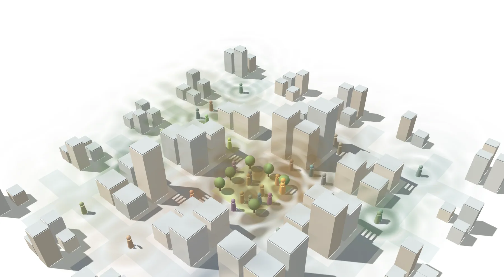
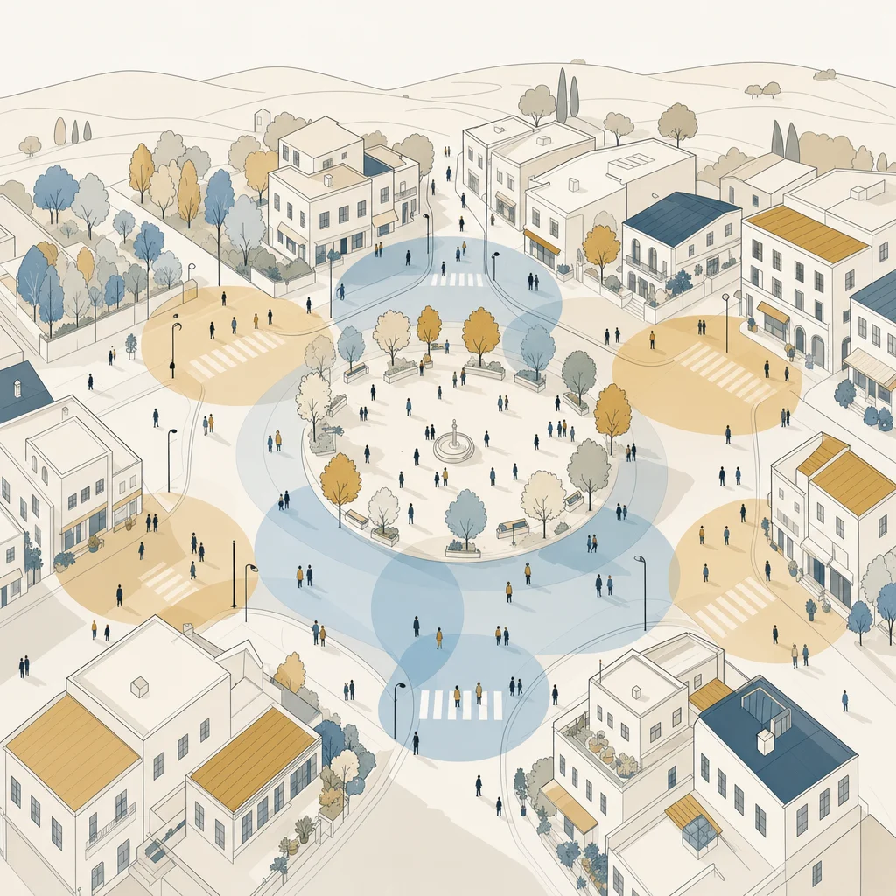

Research
Affectosphere Group
研究グループのサイト。論文・受賞・研究助成・メンバー・研究テーマを掲載しています。

Affectosphere · Emotion AI Company
感情は、社会を満たす環境になりました。その時代に、感情を理解するAIをあらゆる現場へ届け、 暮らしと社会をより良くする：感情最適化された時代をつくる会社です。
01 — Vision
感情が社会を満たす環境になったいま、それを正しく扱えるかどうかで、暮らしの質が変わります。私たちが目指すのは、一つひとつの場面で感情が正しく扱われている状態です。
相談の奥にある苦しさが、定型的な返答で流されない。確信が低いときは「わからない」と示し、人の判断へ渡す。
対話AIが、顧客の怒りや不安を読み落とさない。読み取った感情に対して、次の一手を返す。
少数言語、小規模な領域、聞こえにくい人。採算に合わないとして切り捨てられてきた場所にも届く。
盛り上がりを演出するために感情を捏造しない。測れていないことは、測れていないと示す。
この状態を、特定の業界だけでなく、暮らしのあらゆる場面で当たり前にする。それが私たちの言う感情最適化された時代です。感情AIを社会へ広げることが、その手段になります。
02 — Concept
感情は、個人の内面を超えて、言葉・声・行動として社会のあらゆる場所にあふれ、社会を満たす環境になりました。私たちはこれを Affectosphere（情動圏） と呼びます。この環境を測り、理解し、活かす層が、感情AIです。
その技術の土台が Affective Computing（AC／感情計算）、備えるべき力を体系化した枠組みが CAI（計算論的感情知性）です。事業の接点はACに集まり、CAIはその全体像を示します。

03 — What We Do
自社で最終サービスを作るのではなく、他社のサービスや組織の感情を扱う部分を引き受けます。場面ごとに適した感情AIを選び、組み合わせ、必要なら作る：一つの製品ではなく、感情AIの研究開発力そのものを提供するのが私たちの事業です。
目的の整理、扱えるデータと倫理上の制約の確認、技術の選定・組み合わせ、試作、評価、組み込みまで。受託研究開発としてお引き受けします。
多様な感情タスクを一つで扱う感情基盤モデル Affeline。研究用・非商用のライセンスで Hugging Face に公開しているほか、商用利用のライセンスとAPIの形でご提供します。
注釈者間の不一致の分析、受け取り方の割れが分かる感情データの作成。お手元のデータの分析も、データそのものの提供も行います。
感情AIの判定の偏りや妥当性を検証します。導入前の点検、評価の設計、企業・開発者向けの感情AI倫理教育まで。
あわせて、メディア活動・書籍・セミナー、展示会での感情AIアートの展示を通じて、感情AIの使い方そのものを社会に広げます。
04 — Problems
感情を扱う機能を自社のサービスや組織に取り入れたい。そう考えた企業が実際にぶつかるのは、この3つです。
汎用の道具では目的に合わず、専用に作るにはデータと専門知識が要ります。どの技術をどう組み合わせるかの判断が、社内では難しい。
実行ごとに判定が変わり、確からしさも分かりません。重要な判断の根拠にしにくく、品質を保証できません。
用途によっては規制の対象にもなります（EUのAI規則は、感情認識を用途に応じて禁止・規制しています）。社内に判断できる人材がいないことが、導入をためらわせます。
05 — How to Start
小さく試してから広げます。最初のご相談から導入まで、4つの段階で進めます。
01 Talk
現場の課題と、扱えるデータの範囲を伺います。感情AIが向かない場合は、そうお伝えします。
02 Design
どの感情をどう測り、何を返すかを決めます。小さく始める範囲を定めます。
03 PoC
限られた範囲で試し、現場にとって有用かを確かめます。
04 Deploy
既存のシステムへ組み込み、運用に合わせて調整します。
06 — Research
技術の土台は、代表が査読誌・国際会議で発表している研究です。論文、受賞、研究助成、研究テーマの一覧は、研究グループのサイトにまとめています。
Research
研究グループのサイト。論文・受賞・研究助成・メンバー・研究テーマを掲載しています。
News
感情AIの動向と、日々の発信をまとめたニュースサイト。
07 — Founder

Founder
感情AIと自然言語処理の研究者。感情を確率分布・不確実性として扱う研究を、査読誌・国際会議で発表。Affectosphere時代に感情AIを社会へ普及させ、人の暮らしを最適化する：その実現のためにAffectosphereを立ち上げる。